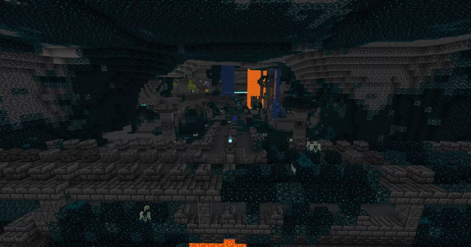
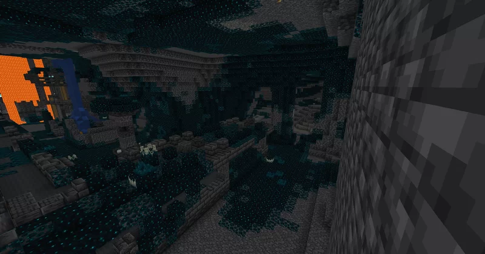
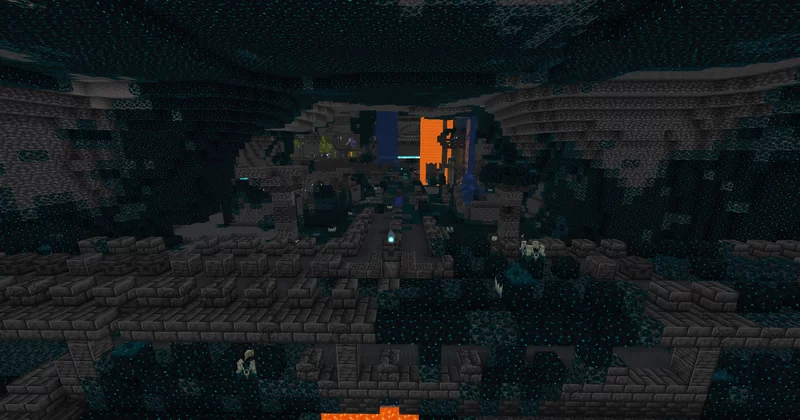
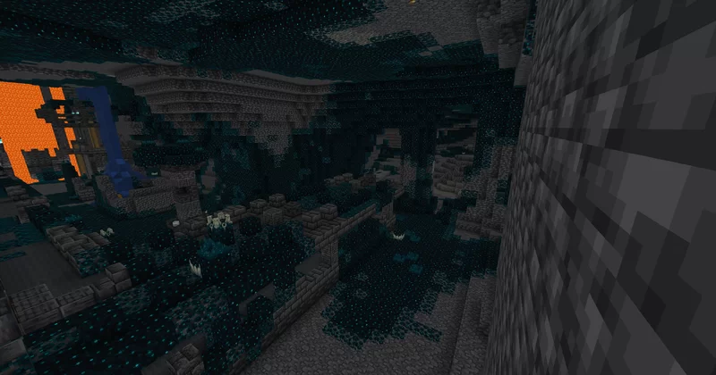

HellonaGR
Warden seed
Ξεκινήστε την περιπέτειά σας στο μυστηριώδες biome Deep Dark! Αυτό το μοναδικό seed σας τοποθετεί απευθείας στο πλαίσιο της πύλης ενός ancient city, περιτριγυρισμένο από την ανατριχιαστική ομορφιά του Deep Dark. Βρίσκεται στο Y=-21 περίπου και λίγο πιο πάνω θα ανακαλύψετε ενα εντυπωσιακό Lush Cave, καθώς δίπλα του ένα mineshaft! Ακριβώς από πάνω σας περιμένει ένας τεράστιος ανοιχτός χώρος για εξερεύνηση. Πόσο δύσκολα μπορείτε να το αντιμετωπίσετε; Αυτό το seed είναι ιδανικός για εκείνους που αναζητούν μια δύσκολη αρχή και τη σπάνια ευκαιρία να ξεκινήσουν κοντά σε μία από τις πιο περίεργες δομές ενός κόσμου του Minecraft.Κοντά στην σούπερ σπιλιά έχει και ένα plains village σε chery biome!
Είστε έτοιμοι να αντιμετωπίσετε τον Warden πρίν πάρετε ένα dirt block;
seed: 1606377695512438131
Στην έκδοση 1.21.4, πάνω από τη σούπερ σπηλιά (έτσι την λέω εγώ), υπάρχει ένα σπάνιο pale garden, κάνοντάς το seed ακόμα πιο μοναδικό! Επίσης, κοντά στο πιο κοντινό stronghold, υπάρχει άλλο ένα ancient city και μια πύλη του Nether!
Φωτογραφίες

 


